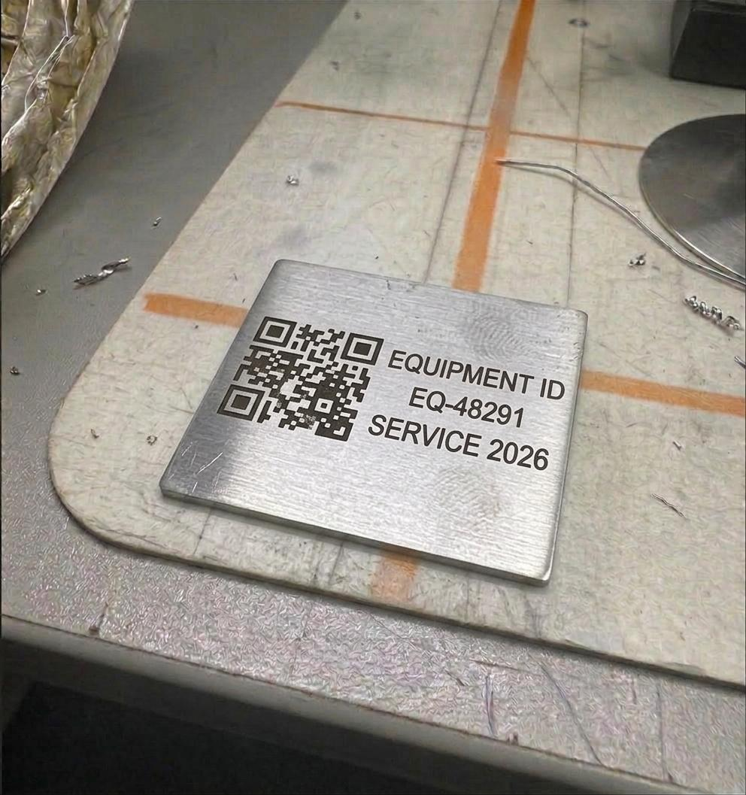
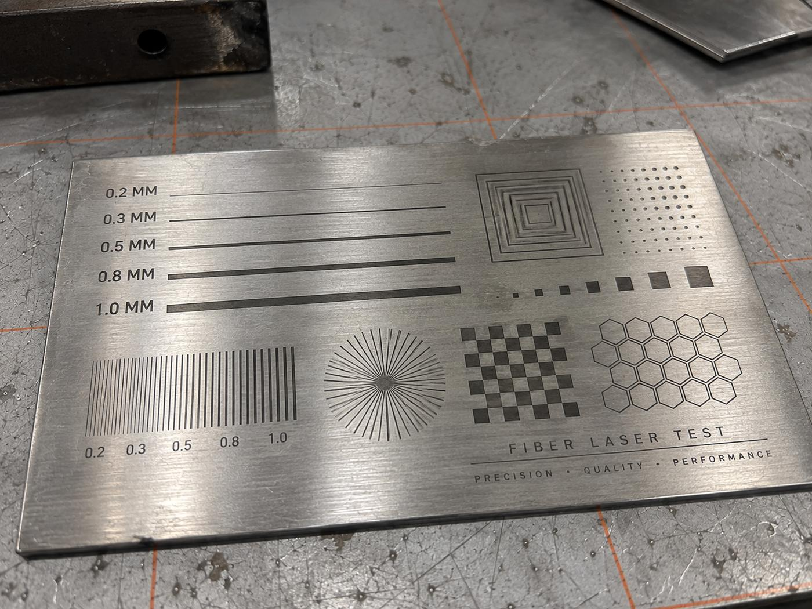
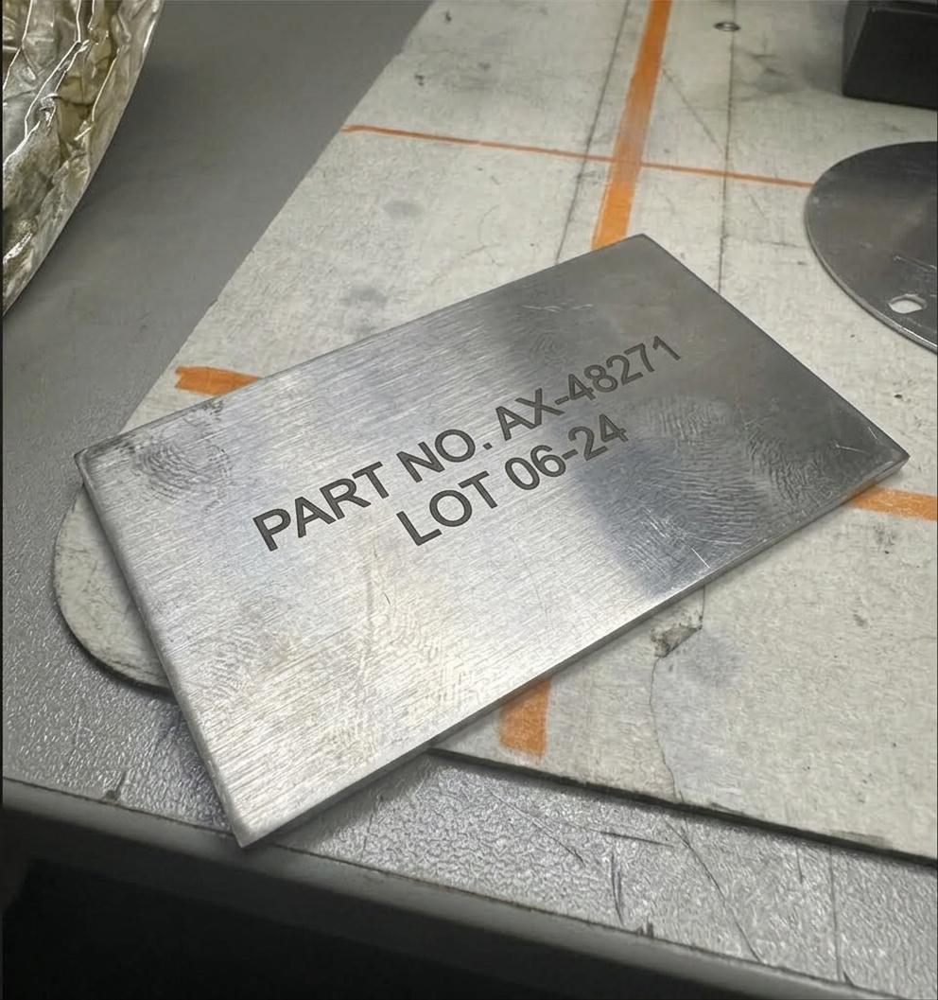

تتبّع الأصول والجرد
كل جهاز في المنشأة يحمل كوداً فريداً يربطه بسجله في نظام الجرد — جرد دقيق بلا أوراق.
لوحات الأصول والأرقام التسلسليةالملصق الذي يحمل الباركود هو أول ما يتلف في بيئة العمل — وبفقدانه تتوقف سلسلة التتبّع كلها. الكود المحفور بالليزر في المعدن يبقى مقروءاً بعد سنوات من الزيوت والغسيل والاحتكاك.

أنظمة التتبّع والجرد والصيانة كلها تقوم على افتراض واحد: أن الكود موجود ومقروء. في الواقع، الملصق اللاصق في مصنع أو ورشة أو موقع إنشائي يتعرّض للزيوت والمذيبات والحرارة والغسيل بالضغط والاحتكاك، ويسقط أو يصبح غير قابل للقراءة خلال أشهر.
الكود المحفور بالليزر جزء من سطح المعدن. لا يُنزع ولا يُمحى ولا يبهت، ويظل قابلاً للقراءة بالجوال أو بالماسح الصناعي طوال عمر القطعة. هذا هو الفرق بين نظام تتبّع يعمل فعلاً وبين نظام يحتاج إعادة ترقيم كل سنة.
كل جهاز في المنشأة يحمل كوداً فريداً يربطه بسجله في نظام الجرد — جرد دقيق بلا أوراق.
لوحات الأصول والأرقام التسلسليةالفني يمسح الكود بجواله فيفتح تاريخ الصيانة والدليل وقائمة قطع الغيار للمعدة نفسها.
كل قطعة تحمل كود تشغيلتها وتاريخ إنتاجها — تتبّع كامل عند أي شكوى جودة أو استدعاء.
كود فريد لكل قطعة أصلية يصعب تقليده، يمكن للعميل التحقق منه بجواله.
كود على المنتج يفتح صفحة الضمان أو دليل الاستخدام أو حساباتك — بلا ملصق يسقط.
حفر الشعارات على المنتجاتكود يوثّق آخر فحص أو معايرة أو شهادة سلامة للمعدة، ويفتح الشهادة الرقمية مباشرة.
الخطأ الأشهر هو تصغير الكود أكثر مما يحتمل المحتوى. هذه الأرقام العملية التي نعتمدها.
| نوع الكود | أصغر مقاس عملي | ملاحظة |
|---|---|---|
| كود QR برابط قصير | 8 × 8 مم | يُقرأ بالجوال بسهولة — المقاس الأكثر طلباً للوحات المعدات. |
| كود QR برابط طويل | 15 × 15 مم | الرابط الطويل يعني مربعات أصغر — نرشّح دائماً اختصار الرابط. |
| داتا ماتريكس | 5 × 5 مم | الخيار الأمثل للقطع الصغيرة، ويقرأ حتى مع تلف جزئي. |
| باركود خطي | 25 × 6 مم | يحتاج طولاً أكبر — غير عملي على القطع الضيقة. |
| كود على سطح منحنٍ | +30% من المقاس | الانحناء يشوّه القراءة، فنكبّر الكود ونضعه في أقل منطقة انحناءً. |
نختبر كل كود فعلياً بالماسح وبالجوال قبل التسليم — لا نسلّم كوداً لم يُقرأ أمامنا.

دقة الخطوط
تتبّع التشغيلاتالصور نماذج وتصورات بصرية توضح إمكانيات الخدمة.
الكود مع الرقم التسلسلي وبيانات المعدة على لوحة واحدة نقصّها ونحفرها.
اذهب إلى الصفحةكل ما يتعلق بالحفر بالليزر: الأنواع والمعادن والنتائج المتوقعة.
اذهب إلى الصفحةتصنيع القطعة وترقيمها ووسمها بكودها في دورة إنتاج واحدة.
اذهب إلى الصفحةنعم، إذا كان المقاس والتباين مناسبين. المعدن سطح عاكس، لذلك نضبط الإعدادات للحصول على تباين كافٍ بين المربعات الداكنة والسطح الفاتح، ونتجنّب المناطق شديدة اللمعان. نختبر كل كود بالجوال وبالماسح قبل التسليم.
نعم. نستورد قائمة الأكواد أو الروابط من ملف Excel، فتتغيّر تلقائياً من قطعة لأخرى دون تدخّل يدوي. هذا هو الأسلوب المعتاد في ترقيم الأصول وتتبّع التشغيلات، وننفّذه لدفعات تتجاوز الألف قطعة.
هذه النقطة الأهم قبل التنفيذ: الكود المحفور دائم، لذا نرشّح بشدة استخدام رابط مختصر ثابت تتحكم أنت في وجهته (Short link قابل لإعادة التوجيه)، بدل رابط مباشر لصفحة قد تتغيّر. هكذا تستطيع تغيير الوجهة لاحقاً دون إعادة حفر أي قطعة.
لا. الكود جزء من سطح المعدن ولا يزول بالزيوت أو المذيبات أو الغسيل بالضغط أو الحرارة. الاحتياط الوحيد هو في القطع المعرّضة لاحتكاك ميكانيكي مباشر ومستمر على منطقة الكود نفسها — وفي هذه الحالة نرشّح حفراً أعمق أو نقل الكود إلى موضع محمي على القطعة.
نوع الكود، محتواه أو ملف Excel بالأكواد، مقاس منطقة النقش، والعدد — ونعيد لك السعر والموعد.
أرسل تفاصيل الأكواد والقطع، واحصل على عرض سعر — وكل كود يُختبر قبل أن يخرج من عندنا.